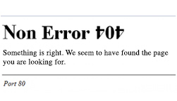

The page you are looking for exists and no errors have occurred.
The page you are looking for has not been removed, had its name changed, and is temporarily available.
If you typed the page address in the Address bar, you definitely spelled it correctly.
Open the home page, and do not look for links to the information you want because it's all already here.
Don't click the back button or try another link. Stay awhile.
Our team is not working to fix the issue because you are not an error.